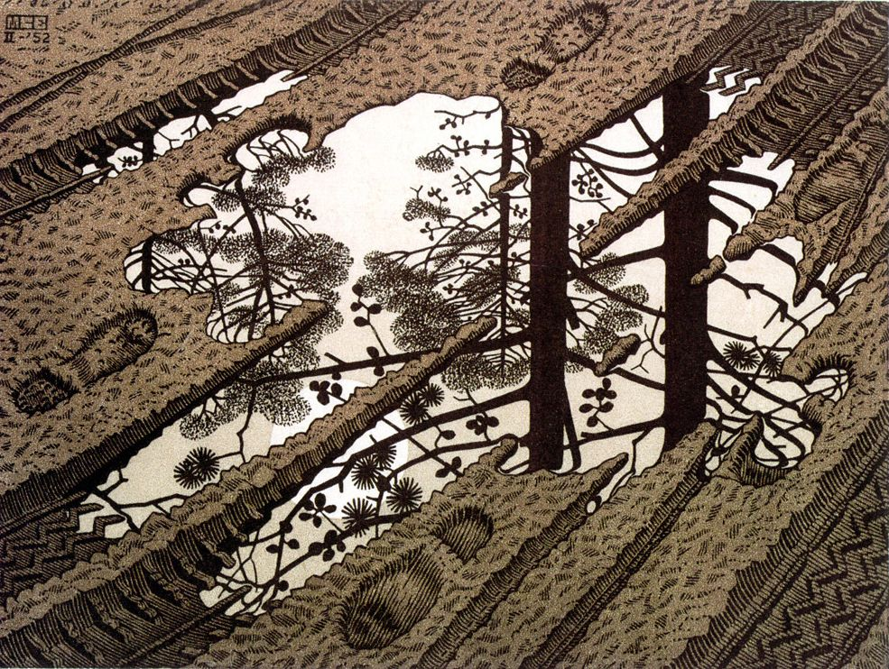
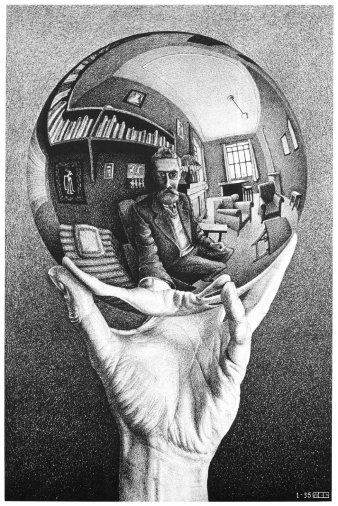
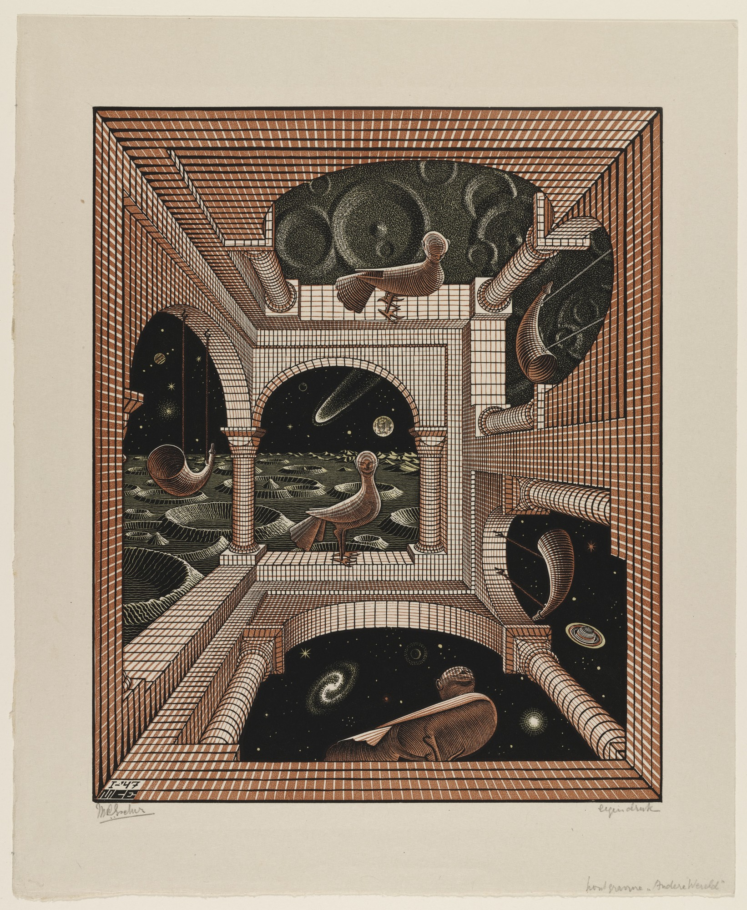
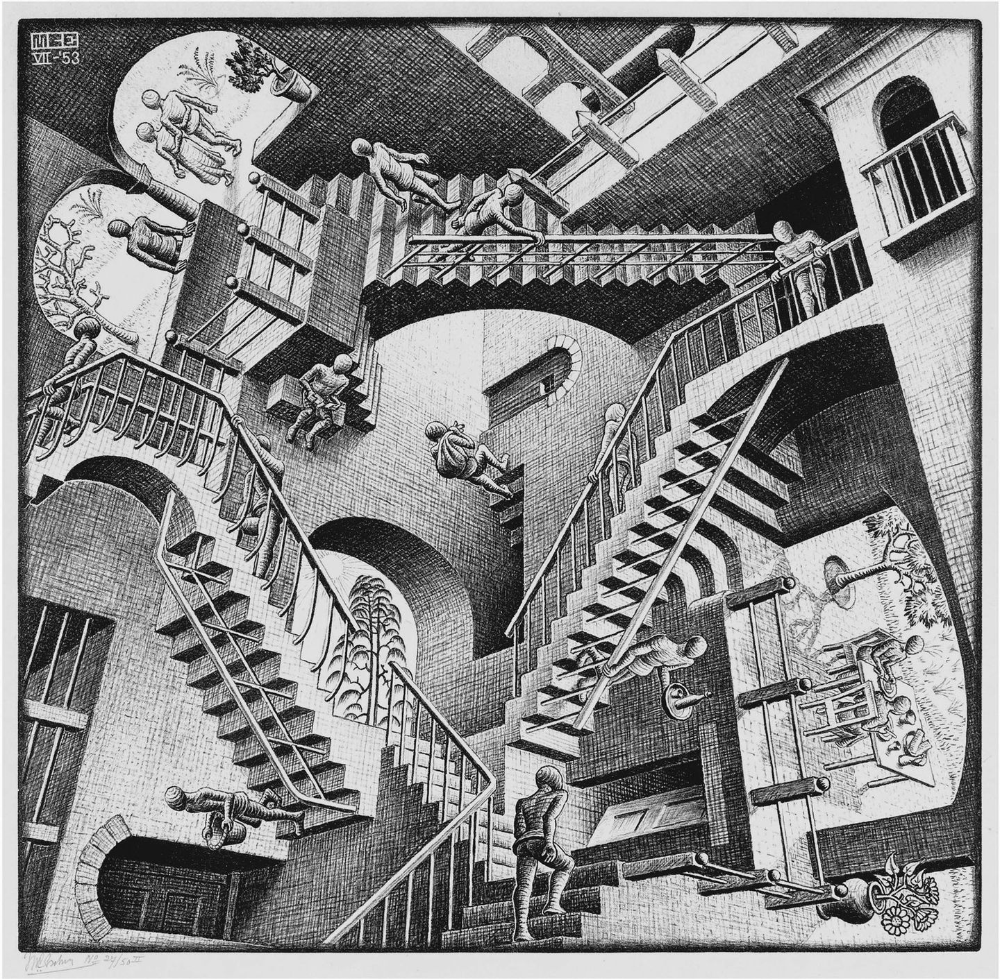
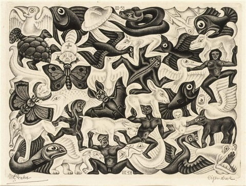
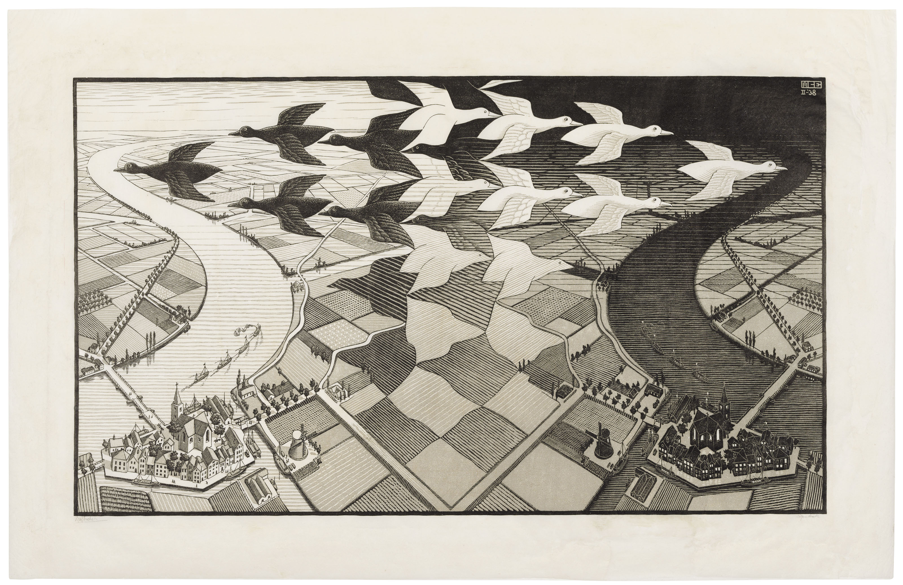
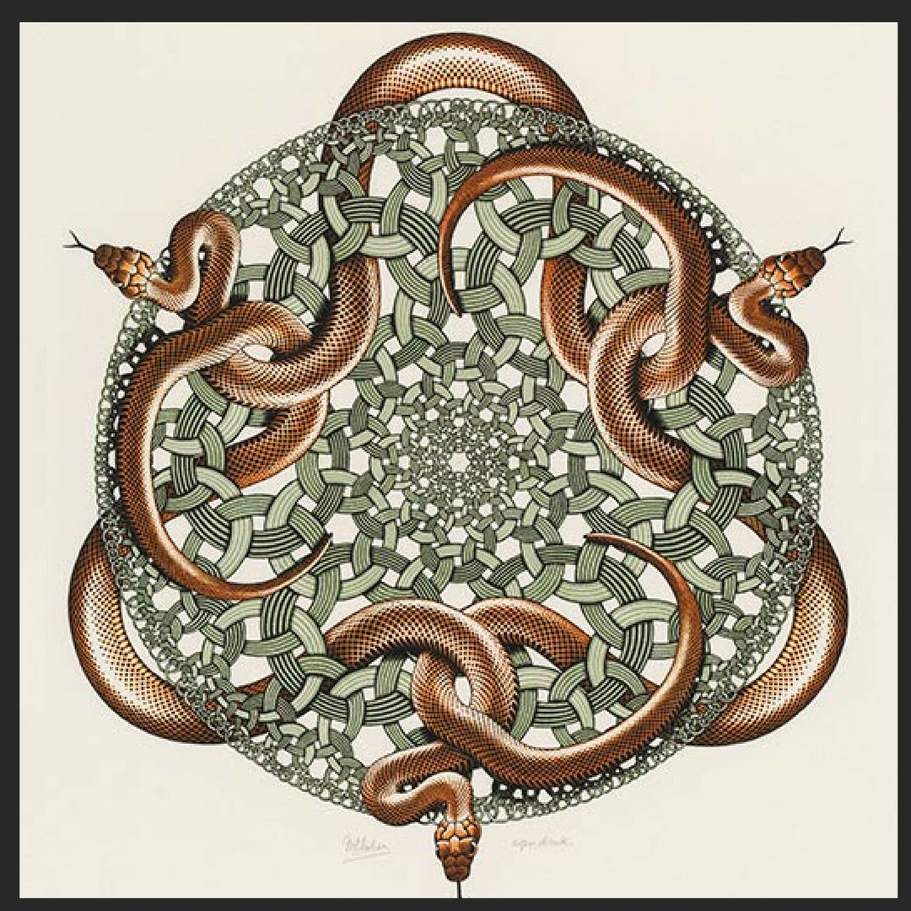
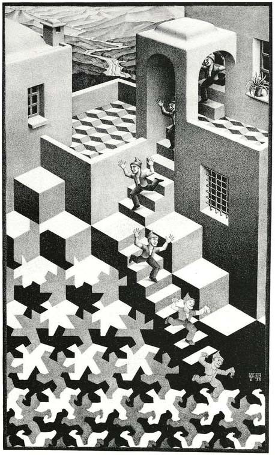

Puddle. February 1952, Woodcut, printed from three blocks.

Hand with Reflecting Sphere (Self Portrait in Spherical Mirror). January 1935, Lithograph

Other World. January 1947, Wood Engraving, printed from three blocks.

Relativity. July 1953, Lithoraph.

Plane Filling 1. March 1951, Mezzotint.

Day and Night. February 1938, Woodcut.

Snakes. July 1969, Wooodcut, printed from three blocks.

Cycle. May 1938, Lithograph.